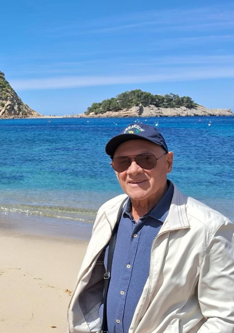

Nossa história · Florianópolis, SC
Tudo começou em 1967, quando Antônio Pereira Oliveira fundou a Ilhatur e levou os primeiros grupos de Florianópolis para conhecer o mundo. De lá até hoje, foram excursões com até 300 pessoas, destinos em todos os continentes e três gerações da mesma família cuidando de cada detalhe da viagem.

O homem que começou tudo
Antônio abriu a Ilhatur em 1967 e passou a vida na estrada, guiando pessoalmente os grupos por Cuba, Europa, Ásia e Austrália. Foi assim, viagem após viagem, que construiu a confiança que sustenta a empresa até hoje.
Quase sessenta anos depois, ele continua viajando. A mesma vontade de mostrar o mundo que abriu a agência é a que guia cada roteiro que montamos.
Realizando sonhos desde 1967.
A trajetória
Antônio Pereira Oliveira funda a agência e se torna um dos pioneiros do turismo em grupo em Florianópolis.

Grupos de até 300 pessoas partem de Santa Catarina para destinos marcantes, da Disney ao Caribe. A Ilhatur vira sinônimo de viagem em grupo na região.
até 300 pessoas por excursão
A empresa adota o nome atual e consolida décadas de trabalho marcadas pela confiança e pelo cuidado com cada viajante.

Antônio Filho entra na operação e moderniza os processos. Laís cuida do comercial, com mais de 35 países no passaporte e vivência internacional para orientar cada cliente.

Europa, Ásia, cruzeiros, mercados de Natal e a floração das cerejeiras. Viagens em grupo com datas fixas, pensadas nos mínimos detalhes.

1967 até hoje · fotos reais das viagens


O que nunca mudou
Em quase sessenta anos, os destinos se multiplicaram, mas a forma de tratar cada viagem continua a mesma: conforto, segurança e a certeza de que alguém que já esteve lá está cuidando de cada detalhe por você.
Veja as próximas viagens em grupoPróximas viagens em grupo
Datas fixas, grupos acompanhados e tudo organizado nos mínimos detalhes. Deslize para conhecer todos os roteiros.